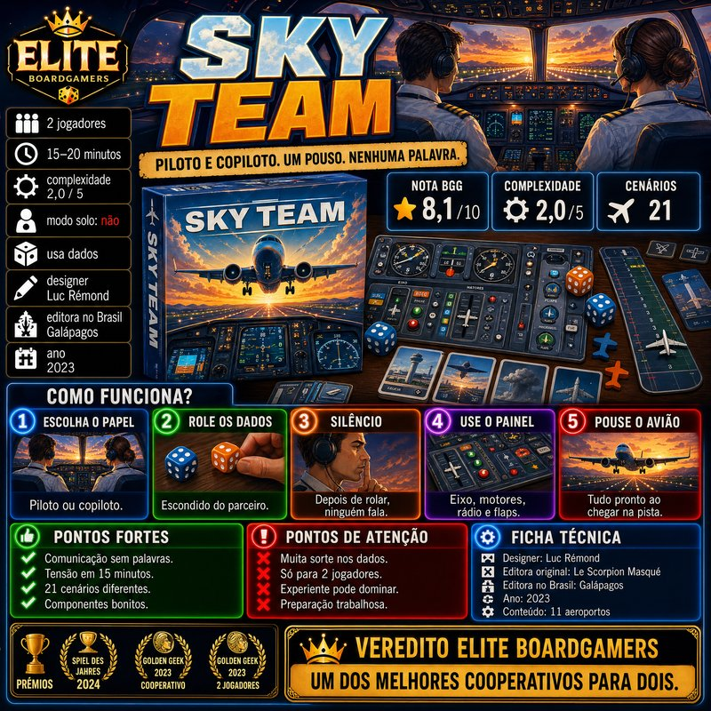
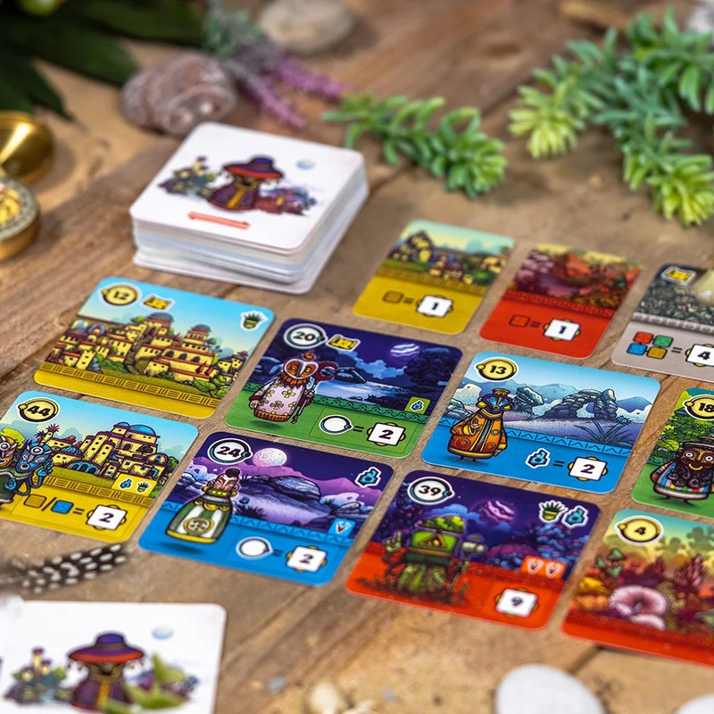
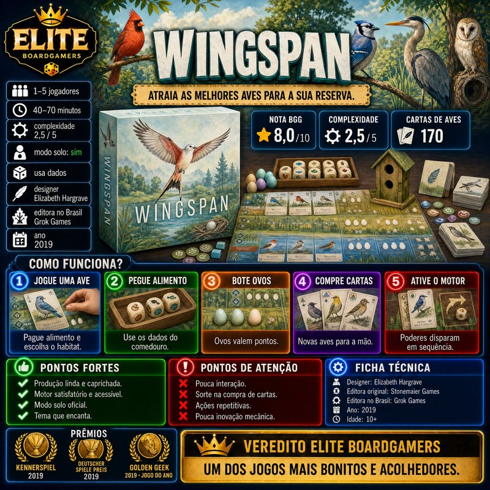

Resumo em 30 segundos
Um dos melhores jogos de entrada já criados.
Destaques
- Aprende-se em minutos
- Componentes que dão vontade de jogar
- Decisões tensas em pouco tempo
Atenção
- Tema apenas decorativo
- Pode ser maldoso
- Pontuação difícil de explicar
4 vitórias em prêmios, incluindo As d'Or 2018 · Jeu de l’Année
Para quem: quer um jogo bonito para levar a pessoas que não jogam; joga muito em casal.
Como funciona
Pegue azulejos de uma cor, encha as linhas e decore a parede sem desperdiçar peças.
- 1
Pegue azulejos
Escolha uma fábrica e pegue todos os azulejos de uma única cor; o que sobra vai para o centro da mesa.
- 2
Prepare as linhas
Coloque os azulejos numa linha de preparação de uma só cor. As linhas têm de 1 a 5 espaços.
- 3
Cuidado com o chão
Azulejos que não cabem caem na linha do chão e tiram pontos no fim da rodada, cada vez mais.
- 4
Decore a parede
Ao fim da rodada, cada linha completa manda um azulejo para a parede, que pontua pelas peças vizinhas.
- 5
Feche uma fileira
O jogo acaba quando alguém completa uma fileira; bônus por fileiras, colunas e cores decidem o vencedor.
Ler as regras completas
Cada jogador tem um tabuleiro com duas partes: à esquerda, cinco linhas de preparação, de 1 a 5 espaços; à direita, a parede, uma grade de 5 por 5 em que cada cor tem um lugar certo em cada fileira. No centro da mesa ficam os expositores, chamados de fábricas, com quatro azulejos sorteados cada.
Na sua vez, você escolhe uma fábrica e pega todos os azulejos de uma única cor; o resto vai para o centro da mesa. Também pode pegar todos os azulejos de uma cor que estejam no centro, e o primeiro a fazer isso recebe a ficha de primeiro jogador, que vale um ponto negativo.
Os azulejos pegos vão para uma linha de preparação, sempre de uma única cor por linha. O que não cabe cai na linha do chão, na parte de baixo do tabuleiro, e tira pontos no fim da rodada, cada vez mais à medida que ela enche.
Quando os azulejos da mesa acabam, a rodada termina. Cada linha de preparação completa manda um azulejo para a parede, na mesma fileira, e o resto é descartado. O azulejo vale um ponto, mais um por peça ligada a ele na horizontal e na vertical.
O jogo acaba quando alguém completa uma fileira horizontal da parede. Aí entram os bônus: 2 pontos por fileira completa, 7 por coluna completa e 10 por cor com os cinco azulejos na parede. Vence quem tiver mais pontos.
Como é jogar
“Um quebra-cabeça abstrato que eu ainda tenho vontade de resolver depois de muitas partidas.”
Board Game Quest (tradução livre)
Cada rodada começa tranquila e termina apertada. No início há muitas opções nas fábricas; quatro ou cinco turnos depois, sobram poucas cores no centro, e alguém vai ser obrigado a pegar seis azulejos vermelhos que não cabem em lugar nenhum. A Board Game Quest descreve bem a tensão: empurrar as sobras para o centro pode preparar uma boa jogada mais tarde, mas também entrega essas peças ao adversário.
Continuar lendo
A dois, o jogo fica mais agressivo, porque vale a pena olhar o tabuleiro do outro e bloquear a cor de que ele precisa. A quatro, a mesa muda tanto entre um turno e outro que cada um tende a cuidar do próprio tabuleiro. Em qualquer número, a partida dura de 30 a 45 minutos e termina com vontade de jogar mais uma.
O que funciona muito bem
Aprende-se em minutos
Por quê?A ação é sempre a mesma: pegar todos os azulejos de uma cor. Por isso Azul é ótimo para apresentar a quem não joga, e todas as resenhas consultadas destacam a regra curta. Só a pontuação da parede pede uma rodada de exemplo.
Componentes que dão vontade de jogar
Por quê?Os azulejos de resina, grossos e pesados, com estampas inspiradas nos azulejos portugueses, são o elogio mais repetido pela crítica, da Board Game Quest à Wargamer. O jogo chama atenção na mesa antes mesmo da primeira jogada.
Decisões tensas em pouco tempo
Por quê?As partidas duram de 30 a 45 minutos, mas cada escolha pesa: um azulejo mal pego na reta final pode encher a linha do chão e custar muitos pontos, como observa a Board Game Quest. A tensão cresce a cada rodada.
Interação na medida certa
Por quê?Dá para atrapalhar o adversário deixando sobras que ele será obrigado a pegar, ou levando a cor de que ele precisa. A There Will Be Games trata essa disputa como o tempero do jogo, e a dois ela fica ainda mais evidente.
Ótimo a dois
Por quê?A dois, a partida fica mais tensa e estratégica, porque cada um precisa ser proativo para bloquear o outro, segundo a Board Game Quest. O jogo funciona de 2 a 4 sem regras diferentes, só com menos fábricas na mesa.
Consagrado por júris diferentes
Por quê?Azul venceu o Spiel des Jahres, o As d'Or e o Deutscher Spiele Preis em 2018, além do Golden Geek de jogo para família em 2017, um reconhecimento raro de júris com perfis bem diferentes entre si.
Pontos de atenção
Tema apenas decorativo Moderada
Por quê?A crítica mais comum, feita pela Board Game Quest e pela BoardGame Journey: a história do palácio português não aparece na jogabilidade. O tema fica nos componentes, e o jogo é, na prática, um abstrato de cores e padrões.
Pode ser maldoso Moderada
Por quê?Forçar o adversário a pegar sobras que vão para o chão é parte da estratégia. A Wargamer avisa que essa maldade pode incomodar quem não espera por ela, principalmente em grupos com jogadores casuais.
Pontuação difícil de explicar Leve
Por quê?A Board Game Quest aponta que as regras de preencher as linhas e pontuar a parede são difíceis de explicar no começo, sem um jogo parecido para comparar. Uma rodada de exemplo resolve a maior parte das dúvidas.
Distância entre novatos e veteranos Leve
Por quê?Em grupos com experiências diferentes, a diferença de pontos pode ser enorme: a Board Game Quest relata uma partida que terminou 75 a 29. Quem joga muito aprende a forçar sobras e a planejar a parede.
Sem modo solo Leve
Por quê?Azul é para 2 a 4 jogadores, e não há regra solo na caixa do jogo base. Quem joga muito sozinho precisa procurar outras opções entre os quebra-cabeças de peças.
Pouca variação Leve
Por quê?No jogo base não há cartas, objetivos ou preparação variável: toda partida parte da mesma estrutura. É uma observação nossa a partir das regras; a variação fica com o lado cinza do tabuleiro, de parede livre, e com os outros jogos da série.
Para quem é
Perfil do jogo
Com quantos jogar
- 2 jogadoresÓtimo
Mais tenso e estratégico, segundo a Board Game Quest: vale bloquear a cor de que o outro precisa.
- 3 jogadoresBom
Bom equilíbrio entre controle e caos, com sete fábricas na mesa e boas chances de planejar a parede.
- 4 jogadoresBom
A mesa muda muito entre os turnos, então cada um tende a cuidar do próprio tabuleiro.
- 2 jogadores: Mais tenso e estratégico, segundo a Board Game Quest: vale bloquear a cor de que o outro precisa.
- 3 jogadores: Bom equilíbrio entre controle e caos, com sete fábricas na mesa e boas chances de planejar a parede.
- 4 jogadores: A mesa muda muito entre os turnos, então cada um tende a cuidar do próprio tabuleiro.
É para você se…
- Quer um jogo bonito para levar a pessoas que não jogam
- Joga muito em casal
- Gosta de jogos abstratos curtos e tensos
- Gosta de partidas que pedem revanche
- Valoriza componentes caprichados
Pense duas vezes se…
- Busca imersão temática
- Não gosta de atrapalhar nem ser atrapalhado
- Quer jogar sozinho
- Quer variedade de cartas e objetivos
- Prefere jogos cooperativos
Dica para a primeira partida
Explique a pegada de azulejos em um minuto e gaste o resto mostrando a pontuação da parede com um exemplo: um azulejo sozinho vale 1 ponto, ligado a outros vale mais. A Board Game Quest lembra que essa é a parte mais difícil de explicar. Dica prática: na primeira partida, ignore os bônus de coluna e cor e observe quanto a linha do chão pode custar; na segunda, todos já entendem o jogo.
Edição nacional e preço
R$ 229 a R$ 344
A Galápagos publica Azul em português, com o mesmo conteúdo da caixa original. Em 27/10/2026, comparadores de preço mostravam o jogo entre R$ 229 e R$ 344, dependendo da loja e do pagamento no Pix. A expansão Mosaico de Cristal também saiu em português, a partir de cerca de R$ 200.
Expansões e versões
A série cresceu com jogos independentes, como Azul: Stained Glass of Sintra, Azul: Summer Pavilion e Azul: Queen's Garden, cada um com regras próprias. Há também a expansão Mosaico de Cristal, com tabuleiros de dupla camada, e a versão de bolso Azul Mini, ambas encontradas em português.
Se você gosta de Azul…

Sky TeamPara casais que gostam de Azul: um cooperativo só para dois, com dados e decisões silenciosas, em partidas de 15 minutos e muita tensão.Ler a resenha →
FarawayOutro jogo curto de padrões e escolhas apertadas, com cartas no lugar dos azulejos e uma pontuação de trás para frente que surpreende.Ler a resenha →
WingspanPara quem quer subir um degrau: também é bonito e acessível, mas com um motor de cartas que cresce a cada rodada e partidas mais longas.Ler a resenha →
Veredito Elite Boardgamers
RecomendadoAzul merece os prêmios que ganhou: a regra cabe em um minuto, os azulejos dão vontade de jogar e a disputa fica tensa a cada rodada, principalmente a dois. O tema é só decoração, a pontuação da parede pede uma rodada de exemplo e a maldade de deixar sobras para o outro pode incomodar quem não espera por ela. Por cerca de R$ 230 a R$ 340, é uma das melhores portas de entrada para jogos modernos e um jogo que continua bom depois de muitas partidas.
Um dos melhores jogos de entrada já criados.
Gostou da resenha?
A Elite Boardgamers publica resenhas de jogos premiados todos os dias. Entre no grupo para conversar sobre jogos e siga no Instagram.
Fontes (11)
- BoardGameGeek – Azul nota, nº de avaliações, ano
- Bitewing Games – Which Azul is Best? peso BGG
- Ludopedia – Azul nota Ludopedia
- Board Game Quest – Azul Review tema, penalidades, componentes
- Wargamer – Azul review interação maldosa, componentes
- There Will Be Games – Azul Review hate drafting
- BoardGame Journey – Azul Review tema
- Galápagos – Azul edição nacional
- Wikipedia – Azul (board game) designer, editora, prêmios (conferência)
- Zoom – Jogo Azul Galápagos preço de referência
- Buscapé – Jogo Azul Galápagos preço de referência
Consulta às fontes em 26/10/2026.